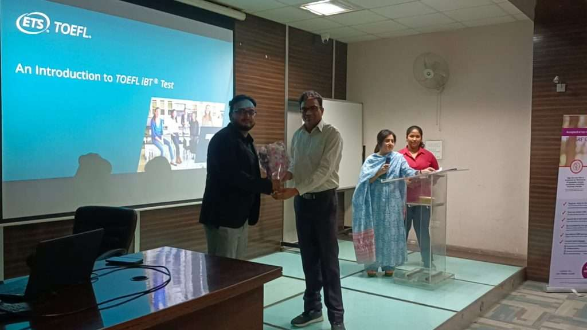

Our faculties


BPIT as an ‘A’ grade institute of GGSIPU offers courses of Bachelor of Technology (B.Tech) and Master of Business Administration (MBA), which are approved by the All India Council of Technical Education (AICTE).
Visit us to know more.All Undergraduate and Postgraduate Programs are affiliated to
Guru Gobind Singh Indraprastha University, Delhi
Undergraduate education is education conducted after secondary education and prior to postgraduate education. It typically includes all postsecondary programs up to the level of a bachelor's degree. BE in the case of our college.
EXPLOREPostgraduate education involves learning and studying for academic or professional degrees, academic or professional certificates, academic or professional diplomas, or other qualifications for which a first or bachelor's degree generally is required, and it is normally considered to be part of higher education.
EXPLOREThe Bachelor of Business Administration (BBA) program at BPIT offers a comprehensive understanding of business principles, management techniques, and organizational behavior. Through a dynamic curriculum and practical experiences, students develop essential skills in leadership, communication, and decision-making, preparing them for diverse roles in the corporate world.
EXPLOREThe Master of Business Administration (MBA) program at BPIT is designed to equip students with advanced managerial skills and strategic thinking necessary for leadership roles in the global business landscape. With a focus on experiential learning and industry-relevant curriculum, the program fosters critical thinking, innovation, and effective problem-solving abilities, empowering graduates to drive business success.
EXPLORE
Discover what our students have to say about their experiences at BPIT.

BPIT offers excellent infrastructure and facilities. The classrooms are equipped with modern amenities like smart boards, and the library provides access to a wide range of textbooks and resources. The campus is always clean, and the food in the canteen is hygienic.

Life at BPIT is amazing. The campus is equipped with multiple sports grounds, a library, and canteens. The area is safe and easily accessible from the station. BPIT efficiently handles emergencies.